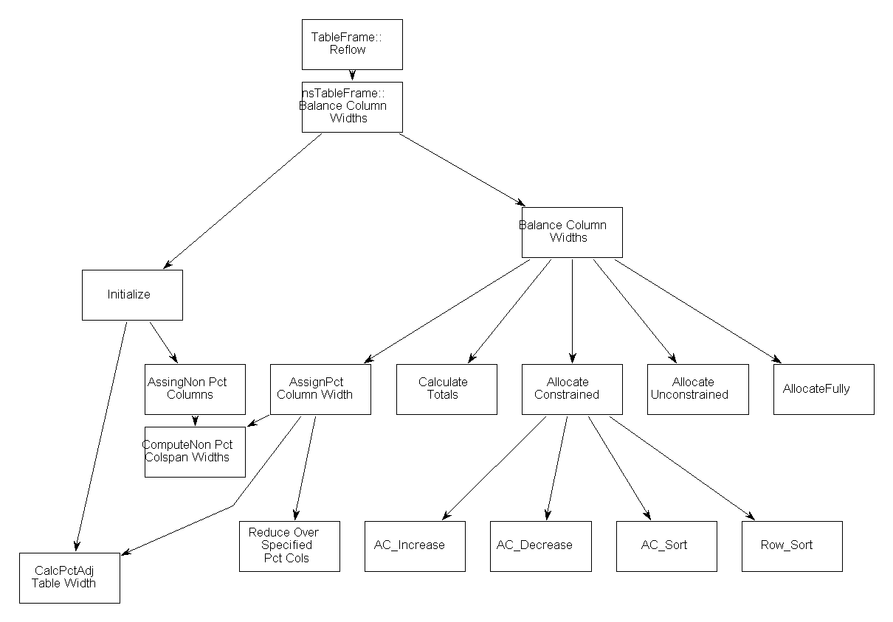

Notes about the layout strategy in mozilla
Bernd Mielke
Specs
The table layout algorithm is based on two W3C recommendations:
HTML 4.01(Chapter11) and
CSS2.1 (Chapter 17).
In CSS2 a distinction between fixed and auto layout of tables has been introduced. The auto-layout mechanism is implemented in
BasicTableLayoutStrategy.cpp the fixed-layout in
FixedTableLayoutStrategy.cpp. All these files are in the
layout/html/table/src subdirectory.
The code
The layout strategies are invoked from
nsTableFrame::Reflow.
The overload of the Initialize and BalanceColumnWidths routines depends on the table style and is decided at runtime.
On the first reflow nsTableFrame::BalanceColumnWidths is called. Inside this routine the corresponding table layout strategy is created and initialized (BasicTableLayoutStrategy::Initialize). Later the column widths are balanced by BasicTableLayoutStrategy::BalanceColumnWidths or the fixed layout counter part. In the following the Basic Table Layout Strategy is discussed. The functionality is distributed over a large number of subroutines as shown in the chart below.

The words
The table layout is width oriented and knows the following widths:
- Minimum content width - min
- the minimum width that is required to layout the content, all linebreak possibilities will be used
- percent width - pct
- the cell width specified in percent,
- fixed width - fix
- the cell width specified as px, mm etc.,
- proportional width - prop
- the cell width specified via 1*, 2* etc. and the
- desired width - des
- the width the content could fill without any linebreaks.
Cells can be members of colspans. These colspans have to distribute their space to the columns they include. This information is hold in the adjusted width's. Due to this there are 10 width informations for every column.
| MIN_CON | DES_CON | FIX | MIN_ADJ | DES_ADJ | FIX_ADJ | PCT | PCT_ADJ | MIN_PRO | FINAL |
The width parameter have the following meaning:
#define WIDTH_NOT_SET -1
#define NUM_WIDTHS 10
#define NUM_MAJOR_WIDTHS 3 // MIN, DES, FIX
#define MIN_CON 0 // minimum width required of the content + padding
#define DES_CON 1 // desired width of the content + padding
#define FIX 2 // fixed width either from the content or cell, col, etc. + padding
#define MIN_ADJ 3 // minimum width + padding due to col spans
#define DES_ADJ 4 // desired width + padding due to col spans
#define FIX_ADJ 5 // fixed width + padding due to col spans
#define PCT 6 // percent width of cell or col
#define PCT_ADJ 7 // percent width of cell or col from percent colspan
#define MIN_PRO 8 // desired width due to proportional <col>s or cols attribute
#define FINAL 9 // width after the table has been balanced, considering all of the others
The priority of allocations for columns is as follows:
- max(MIN_CON, MIN_ADJ)
- max (PCT, PCT_ADJ)
- FIX
- FIX_ADJ
- max(DES_CON, DES_ADJ), but use MIN_PRO if present
- for a fixed width table, the column may get more space if the sum of the col allocations is insufficient
Column width info
Columns get theire width information from style info
<col width="200px"> and from the cells that belong into this column. These informations are very often conflicting. For instance one cell could have a large min width,the next could have a specified fixed width and another a specified pct width. For a given width type the maximum wins.
Special cases
width = "0*"
Assume that you would like to give all the space to the second column in a table. Poor mans choice is leave the first cell auto and specify 100%on the second one ( this works cross-browser)
|
|
<table width="200px" border>
<tbody>
<tr><td>foo</td><td width="100%">bar</td></tr>
</tbody>
</table>
|
The conflict free solution, the column should have the minimum width. So we specify it (this breaks in some other browsers)
|
|
<table border width="200px">
<col width="0*"><col>
<tbody>
<tr><td>foo</td><td>bar</td></tr>
</tbody>
</table>
|
This shrinkwrapping width has usually the suffix
0Proportional
Effective columns
|
|
<table width="200px" border>
<tbody>
<tr><td>foo</td><td colspan="2" width="120px">bar</td></tr>
<tr><td>baz</td><td>zap</td></tr>
</tbody></table>
|
The colspan here is bogus, so the third column should not get any width. One would expect the first column to be 80 px and the second to be 120 px . The advantage of this limiting to
numEffCols is that we dont poke the cellmap for nonexisting cells.
Overspeficied Percent Columns
|
|
<table border width="200px">
<col width="30%"><col width="60%">
<tbody>
<tr><td>foo</td><td>bar</td></tr>
</tbody>
</table>
|
The columns reach here only 90 % percent of the width so the reamaing 20px need to be redistributed between the cols. The second table has
<col width="33%"><col>
Lets return to the first case but now but wiht more than 100%:
|
|
<table border width="200px">
<col width="40%"><col width="80%">
<tbody>
<tr><td>foo</td><td>bar</td></tr>
</tbody>
</table>
|
The algorithm tries to satisfy the requirements on a first come first serve base. The second table has
<col width="40%"><col>. IE and Opera handle this pretty much the same as mozilla.